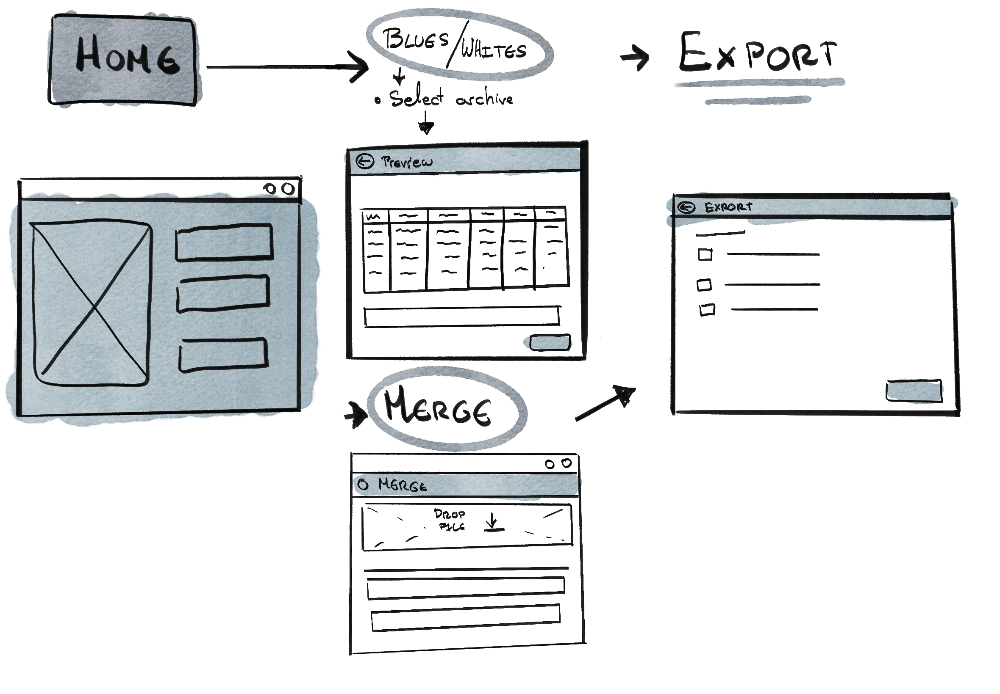
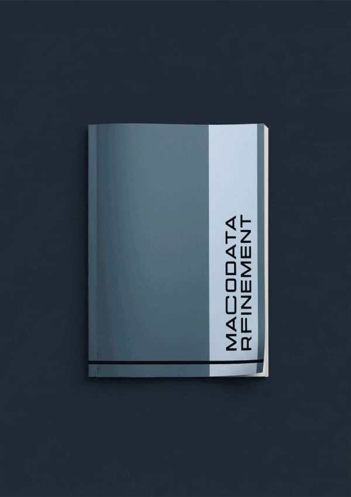

The Problem
Machines do what machines do.
Humans should do what humans do.
At that time, I worked in a direct marketing agency. Part of the business was physical: mail campaigns for clients. An external supplier delivered contact databases in Excel, but the column structure changed with every file. The logistics providers and printers handling the actual mailings needed those databases in one specific format: a standardized address grid with concatenated fields and no duplicates.
That reformatting was done by hand. Every file, every week, 20 minutes to 3 hours each. Two employees on purely mechanical work with real consequences: one misplaced column meant a failed shipment.
- 01 Time Drain 20 min – 3 hrs per file. Every week, without exception. The same manual process, repeated indefinitely.
- 02 Error Risk One misplaced column. A failed shipment. Errors didn’t stay in the spreadsheet.
- 03 Mental Overhead Tacit knowledge. Not documented, not transferable. Entirely dependent on two people.

Research
Before writing anything, I needed to understand how Python handled Excel files. The first prototype wasn’t for the users, it was for me: a way to test what was technically possible. Once I had something that worked, I showed it to my colleagues so they could tell me what they actually needed and how they imagined the final tool. Their answers shaped every decision that followed.
User Research
Two users. Same problem, different relationships with the task.

Primary User
The Logistics Lead
- 40+. Excel expert, zero programming.
- Knows the process better than anyone.
- Relies entirely on manual methods.
- High tech risk aversion — if something can go wrong, she assumes it will.
Needs
speed + control

Secondary User
The Art Director
- Hates spreadsheets. Actively avoids them.
- Similar technical profile, different relationship with the task.
- Doesn’t want to master the process, she wants it gone.
- High initial distrust, but once convinced: needs to work independently.
Needs
autonomy + documentation
Screen Flow
Users needed speed. But not at the cost of control. They distrusted the technology more than they needed the convenience. The design decision was clear: the program proposes. Users confirm. No black box.

Approach
First a sketch.
Then proof.
Then the product.
Five decisions shaped the tool. Each one came from something seen in the daily process: a constraint, a hesitation, a moment where the first version failed.
Program Logic
Each file goes through five operations: column detection and mapping, reordering to match the address grid, field concatenation (title + initials + surname into a single envelope line), duplicate detection, and export in two formats — one for the logistics provider, one for the envelope printer. Blue databases process automatically. White databases show a preview and wait for confirmation.

Process Design
The visual direction was intentional from the start. Users weren’t looking for a polished app. They needed something that matched their mental model of the task: linear, legible, no hidden steps. The Windows-era terminal aesthetic signals exactly what the functionality delivers: this is straightforward, you are in control.

Color palette
#0D1117
Background — dark, low fatigue
#141B24
Surface — cards and panels
#C8D8E8
Text — high contrast, legible
#4A9EBF
Accent — active states, confirmations
#2A3A4A
Buttons — muted with clear hover
Typography
Navigation label
ARCHIVO AZULES BLANCAS
Interface text
Selecciona el archivo Excel
→ Preview generado
Status output
✓ 247 registros procesados
✓ 3 duplicados eliminados
Installation
The first version required Python and Git. Functionally unusable for non-technical users. Nearly killed the project. The redesign: a one-click executable, no visible dependencies, no terminal, one printed manual. How someone encounters a tool for the first time is a design decision, not a setup problem.
Results
The tool became invisible.
The clearest sign it worked.
The measure of success wasn’t the time saved: it was that the process stopped coming up in conversation. When a tool disappears into routine, it has done its job.
-
−0%
Time reduction
From 20 min–3 hours per file to under 5 minutes. Merging took seconds.
-
2 →+
User adoption
Designed for 2 users. Now used by people who were never trained by the original designer.
-
0
Technical requirements
One-click executable. No Python, no Git, no terminal.

The Learning
The hardest part wasn’t the logic of the program. It was making it run on a machine I didn’t control, for someone who hadn’t asked for it. Everything outside the code was also design.
- 01 Architecture first, code second. I learned Python by fixing bugs as they appeared, without structure underneath. I’d consult someone with programming experience before writing the first line.
- 02 Installation is design. Requiring Git nearly ended the project before anyone used it. Every decision about first contact with a tool is a design decision.
- 03 Build a maintenance channel from the start. I left the company. The tool stayed. There’s no feedback loop, no way to push updates. A tool without maintenance is borrowed from its own future.

Procedimiento
Operativo.
A printed booklet designed so that anyone could install and run the program without calling me. Bureaucratic tone, deliberate structure, zero ambiguity.
↓ Download PDFWhat stayed with me wasn’t the tool itself: it was the gap between what a program does and what the people using it actually need. Closing that gap requires more than code. That’s what I went to study formally.